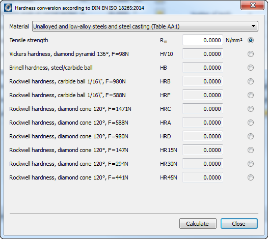

|
|
|


硬度换算
您可以通过 菜单访问硬度换算模块。硬度换算也作为尺寸计算功能存在于材料界面中。因此，您可以在这些界面中使用硬度值来定义拉伸强度。
该模块包含按 DIN EN ISO 18265（2014 年第 2 版）规定的硬度换算计算。在换算过程中，选择 可显示一个列表框，您可以在其中选择所需的材料。其他换算（用于材料）使用非合金钢、低合金钢及铸钢的表格。存储的表格可用于根据需要将拉伸强度值换算为维氏硬度、布氏硬度或洛氏硬度。由于可能存在偏差，只有在无法应用默认测试流程时才应使用所得到的值。数值换算表的中间值由相邻值插值得到。

图 59.1：硬度换算输入界面
根据 DIN EN ISO 18625 集成的钢及钢组换算：
- 非合金钢、低合金钢及铸钢（表 A.1）
- 热处理状态的整体淬硬钢（表 B.2）
- 未处理、软化退火或正火状态的整体淬硬钢（表 B.3）
- 淬硬状态的整体淬硬钢（表 B.4）
- 冷作钢（表 C.2）
- 高速钢（X80WMo6.5、X82WMo6.5、X90WMo6.5、X97WMo3.3、X100WMo6.5、X85WMoCo6.5.5、X105WMoCo6.5.5 和 X79WCo18.5）（表 D.2）
非合金钢、低合金钢和铸钢（应用材料界面中的换算后）的有效范围限定如下：
- 拉伸强度 Rm：255 至 2180 N/mm2
- 维氏硬度 HV：80 至 940 HV
- 布氏硬度 HB：76 至 618 HB
- 洛氏硬度 HRB：41 至 105 HRB
- 洛氏硬度 HRF：82.6 至 115.1 HRF
- 洛氏硬度 HRC：20.3 至 68 HRC
- 洛氏硬度 HRA：60.7 至 85.6 HRA
- 洛氏硬度 HRD：40.3 至 76.9 HRD
- 洛氏硬度 HR 15N：69.6 至 93.2 HR 15N
- 洛氏硬度 HR 30N：41.7 至 84.4 HR 30N
洛氏硬度 HR 45N：19.9 至 75.4 HR 45N
Hardness Conversion
You access the hardness conversion module in the menu. Hardness conversion is also present in the materials screens as a sizing function. You can therefore use a hardness value to define the tensile strength in these screens.
This module includes the hardness conversion calculation as specified in DIN EN ISO 18265, Edition 2-2014. During the conversion, select to display a selection list in which you can select the required material. The other conversions (for the materials) use the table for unalloyed and low-alloy steels and steel casting. The stored tables can be used to convert the value of the tensile strength into Vickers, Brinell or Rockwell hardness, as required. Due to possible variations, the received values should only be used if the default testing process cannot be applied. The interim values of the value conversion table are interpolated from the neighboring values.
Figure 59.1: Hardness conversion input screen
Integrated conversions of the steels and steel groups according to DIN EN ISO 18625:
- Unalloyed and low-alloy steels and steel casting (Table A.1)
- Through hardening steel in heat treated state (Table B.2)
- Through hardening steel in untreated, soft-annealed or normally annealed state (Table B.3)
- Through hardening steel in hardened state (Table B.4)
- Cold-working steels (Table C.2)
- High-speed steels (X80WMo6.5, X82WMo6.5, X90WMo6.5, X97WMo3.3, X100WMo6.5, X85WMoCo6.5.5, X105WMoCo6.5.5 and X79WCo18.5) (Table D.2)
The range of validity for unalloyed and low-alloy steels and cast steel (with the conversion in the material screens applied) is limited as follows:
- Tensile strength Rm: 255 to 2180 N/mm2
- Vickers hardness HV: 80 to 940 HV
- Brinell hardness HB: 76 to 618 HB
- Rockwell hardness HRB: 41 to 105 HRB
- Rockwell hardness HRF: 82.6 to 115.1 HRF
- Rockwell hardness HRC: 20.3 to 68 HRC
- Rockwell hardness HRA: 60.7 to 85.6 HRA
- Rockwell hardness HRD: 40.3 to 76.9 HRD
- Rockwell hardness HR 15N: 69.6 to 93.2 HR 15N
- Rockwell hardness HR 30N: 41.7 to 84.4 HR 30N
Rockwell hardness HR 45N: 19.9 to 75.4 HR 45N